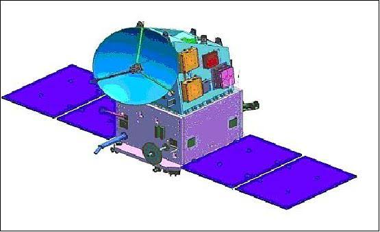

SCATSAT-1
ScatSat-1 was an Indian satellite designed to provide various weather services such as forecasting, cyclone prediction, and tracking. The satellite was developed by the ISRO Satellite Centre in Bangalore, and its payload was developed by the Space Applications Centre in Ahmedabad. ScatSat-1 was equipped with a Ku-band scatterometer, similar to the one on the Oceansat-2, which stopped functioning after four-and-a-half years. Prior to ScatSat-1, India relied on NASA's ISS-RapidScat for cyclone and weather prediction. The data generated by ScatSat-1 were also used by NASA, EUMETSAT, and NOAA.
The information collected by ScatSat-1 is shared with the public through an online platform called the Meteorological and Oceanographic Satellite Data Archive Center. This platform is managed by the Indian Space Research Organization's Space Application Centre, and the information is shared using FTP (File Transfer Protocol).

Rendered Image Of SCATSAT-1
Payload:
The main tool on the satellite was a scatterometer called OSCAT, which was very similar to the one used on another satellite called Oceansat-2. The whole satellite weighed 371 kilograms (818 pounds), and the scatterometer by itself weighed 110 kilograms (240 pounds). The satellite was made to measure how fast the wind was blowing and in what direction, specifically over the ocean.
Launch:
The satellite was sent up into space on September 26, 2016, at 3:42 in the morning (UTC time) from a place called Satish Dhawan Space Centre in Sriharikota, India. It was launched using a special kind of vehicle called PSLV-C35, which was the first one that could change speed and direction multiple times during its trip.
PSLV-C35Rocket Lifting Off with ScatSat-1
End of mission
Data services of ScatSat-1 were discontinued after an irrecoverable TWTA instrument failure occurred on 28 February 2021.